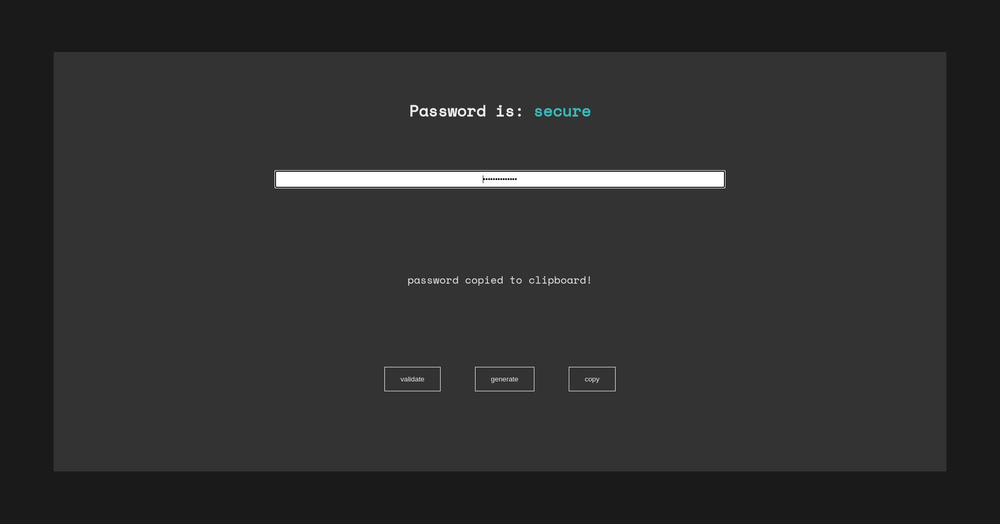

I don't know how secure really is!

This is just a curiosity that I did one day when I was bored, I was learning about regular expressions and I wanted to test if I was able to create a program that validates how secure a password is following a couple of conditions:
the regex I used is the next:
/^(?=.*?[A-Z])(?=.*?[a-z])(?=.*?[0-9])(?=.*?[#?!@$%^&*-.\s]).{12,}$/
It basically summarizes in at least 1 upper, 1 lower, 1 number, 1 simbol and a min length of 12 and I just use vanilla HTML, CSS and JS to this project.
If you want you can take a look at the code in the github repository!
Or you can use the validator itself in the github pages link!